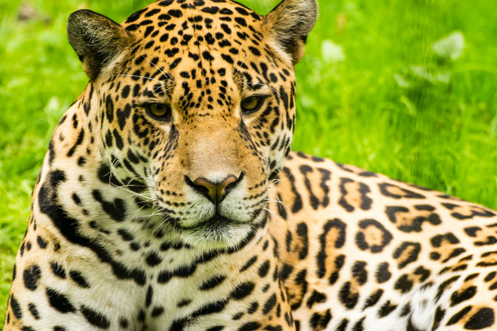

El Jaguar
El jaguar (Panthera onca) ha ocupado un lugar importante en la religión y mitología de muchas culturas precolombinas (olmecas, zapotecas, toltecas, aztecas y mayas, entre otras) y ha sido representado dentro de la iconografía de huicholes, tarascos y huastecos.

Descripción de la especie
El jaguar es el felino de mayor tamaño en América y el tercero en el mundo, después del tigre y el león, mide entre 1.12 y 1.85 metros y su peso va de los 45 a los 160 kilogramos, generalmente las hembras son más pequeñas que los machos.
Su cuerpo es robusto, pecho fuerte, piernas relativamente cortas y fuertemente musculadas, presenta cabeza grande, hocico corto, amplio y chato, ojos grandes color café claro, orejas pequeñas y redondas, el pelo es corto y erizado. El jaguar es bastante ágil, puede saltar entre los árboles y nadar grandes distancias.
El color de su piel varía de amarillo pálido a café rojizo y cambia a blanco en el pecho y en la parte interna de las extremidades. En todo el cuerpo presenta manchas negras, que en los costados cambian en rosetas, dentro de estas puede haber una o más manchas pequeñas.
Existen jaguares con el pelaje negro sobre el cual las manchas apenas se diferencian.
Los felinos con los que se le suele confundir es el leopardo (Panthera pardus), pero son más esbeltos con la cabeza más pequeña que el jaguar y las manchas en forma de roseta del cuerpo no tienen manchas obscuras secundarias en el centro y se distribuye en el continente africano y asiático.
Alimentación
El jaguar es un depredador oportunista, se han reportado más de 85 especies como parte de su alimentación que incluye mamíferos, aves, reptiles, anfibios, peces e invertebrados.
Comportamiento
El jaguar es casi exclusivamente nocturno, pues raras veces sale durante el día. Son solitarios y territoriales, gustan de echarse en el agua e incluso bucean y nadan con gran habilidad. Los machos suelen recorrer grandes distancias y se alejan de su residencia cuando tienen disputas territoriales con otros felinos de la misma especie.
Pese a evidencias de largos viajes que hacen algunos jaguares, son animales sedentarios cuando se encuentran en su hábitat preferido (Leopold, 1988), las hembras adultas tienen ámbitos hogareños cuya extensión es una tercera parte de la de los machos (Aranda, 1998). Machos y hembras viven apartados y solo se reúnen durante el apareamiento (Galindo-Leal, 2009).